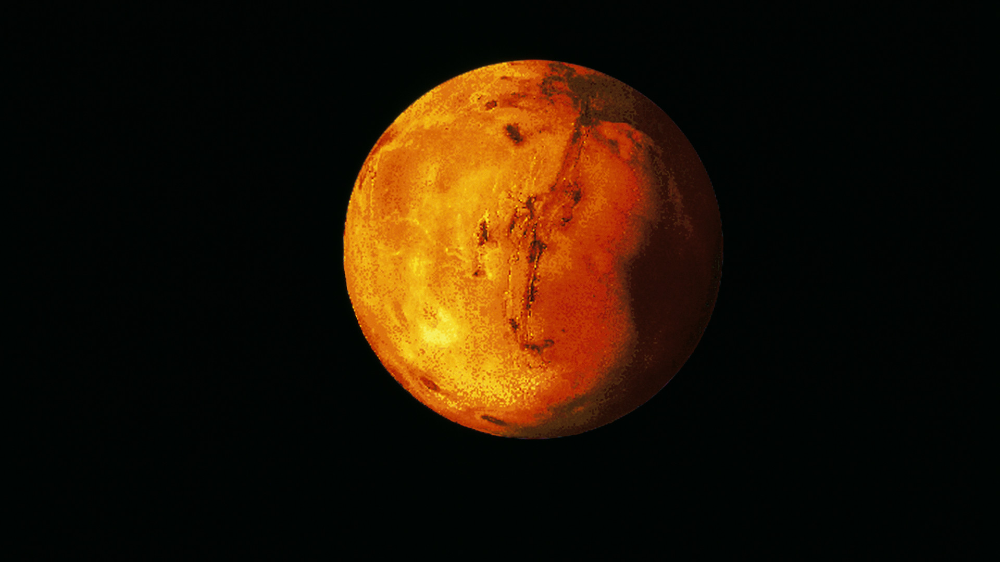

Mars(bolygó)

A Mars a Naptól számított negyedik bolygó a Naprendszerben. Szabad szemmel is könnyedén látható az éjszakai égbolton. A római hadistenről nevezték el, de gyakran hívják „vörös bolygónak” is színe miatt, amit a Mars felszínét meghatározó vas-oxid okoz. A Mars a harmadik legnagyobb kőzetbolygó, számos rendkívüli felszíni képződménnyel.
A Mars nagy hatást gyakorol az emberi képzeletre, mivel egy hibás fordítást követően (természetes csatorna → mesterséges csatorna) elterjedt, hogy a Marson idegen civilizáció létezik.[3] Sok történet született a marslakókról. Legismertebb talán H. G. Wells: Világok harca című irodalmi műve. Jelen tudásunk szerint amennyiben van élet a Marson, az legfeljebb egyszerűbb élőlényekre, mikroorganizmusokra korlátozódik.
Mars holdjai
Két természetes holdja van, a Phobos és a Deimos, mindkettő kicsi és szabálytalan alakú, valószínűleg befogott kisbolygók. Továbbá a 2000-es évek elejétől három mesterséges hold kíséri útján: Mars Odyssey, Mars Express és a Mars Reconnaissance Orbiter.
Felszíne
A Mars felszíne két jelentősen különböző részre tagolódik. Az Északi medence mely egyben az eddig ismert legnagyobb becsapódási kráter vidékein lávafolyások találhatóak, míg a déli részen felföldek ősi becsapódások nyomaival. Földi távcsövekkel nézve a Mars szintén két részre tagolható, amelyek albedója (fényvisszaverő képessége) különböző.
A világosabb területeken vörös vasoxidban gazdag por és homok található. Ezeket régebben marsi földrészeknek hitték, emiatt vannak az ehhez hasonló elnevezések: Arabia Terra (Arab föld), vagy Amazonis Planitia (Amazon-medence). A sötét részeket tengereknek gondolták, ezért kaptak ilyen neveket: Mare Erytherium, Mare Sirenum és Aurorae Sinus(mare = tenger, sinus = öböl). A legnagyobb sötét rész, amely a Marson látható a Syrtis Major.
olympus monsA Marsnak jégsapkája van a pólusokon, amely fagyott vizet és szén-dioxid-ot tartalmaz. Az Olympus Mons, a már nem működő pajzsvulkán, a 27 km-es magasságával a Naprendszer legmagasabb hegye. (A Földön a háromszor akkora gravitáció miatt nem lehet ekkora hegy.) Az Olympus Mons a Tharsis-régióban található, amelyen még több nagy kialudt vulkán is van. A Marson van a Naprendszer legnagyobb kanyonrendszere, a Valles Marineris is, mely 4000 km hosszú és 7 km mély. A Marsot rengeteg becsapódási kráter tarkítja. A legnagyobbak ezek közül a Hellas-medence, amelyet világos vörös homok borít.
Élet a marson
Mai tudásunk szerint egy bolygón akkor alakulhat ki élet, ha ott víz is található, folyadék formájában. Ehhez az kell, hogy a bolygó a lakhatósági zónában legyen, tehát a Naptól annyira távol, hogy a víz ne párologjon el, de ne is fagyjon meg. Ez a mi Naprendszerünkben azt a zónát jelenti, ami a Vénuszon túl és a Mars fél nagytengelye között van. A perihelion idején (mikor a bolygó a legközelebb van a Naphoz) a Mars ebben a zónában van, de a vékony atmoszféra meggátolja, hogy víz nagy területeken jöjjön létre. A legtöbb bizonyíték azt sugallja, hogy a Mars felszínén lévő víz túl sós és savas ahhoz, hogy élet alakuljon ki benne.
A magnetoszféra hiánya és a rendkívül vékony atmoszféra nagy kihívás az élettel szemben; a bolygónak kevés a hőátvitele a felszínén, a napszél bombázása és az atmoszferikus nyomás alacsony volta miatt a víz nem képes folyékony halmazállapotban maradni. A Mars közel (vagy teljesen) halott geológiailag; a vulkanikus tevékenység vége látszólag megállította a vegyi anyagok és ásványi anyagok újrahasznosítását a bolygó felszíne és belső területe között.
A Viking 1 talajmintákat vesz fel tesztekhez Sok vizsgálat mutatja azt, hogy a bolygó régebben élhetőbb volt, mint ma, de még nem tudjuk, hogy alakult-e ki élet rajta. 2017 májusában 3,48 milliárd éves ausztráliai sziklákban megtalálták a legősibb szárazföldi életet a Földön. Ezek a kutatások szintén hasznosak lehetnek a jövőben, hogy hol érdemes életet keresni a Mars bolygón. A NASA Curiosity marsjáró bórt, illetve bórszármazékokat mutatott ki a Gale-kráter kalcium-szulfát ereiben. A bór azért fontos a valamikori élet kutatásában a Marson, mert a bór lényeges szerepet játszik a ribonukleinsav (RNS) létrejöttében, azaz hidat képez az egyszerűbb szerves molekulák és az RNS között.
Kolonizáció
A Mars kolonizálása A marsi élet csak mai értelmében jelent idegen életet, mert nagyon sok terv született a Mars emberek által való kolonizálására. Azért a Marsot tartják a legalkalmasabbnak kolonizálás szempontjából, mivel itt található legközelebb víz, valamint ez a legközelebbi szilárd bolygó. Ettől függetlenül a Mars felszínén nem tud megélni növény vagy állat a jelenlegi környezeti feltételek miatt.[30] A bolygónak a gravitációja 38% a Földhöz képest, mely eltérés izomvesztéssel és csontlerakódással jár. A kolonizálóknak ezen kívül megoldást kell találniuk a nagy hőmérséklet-különbségre, ugyanis a Marson sokkal nagyobb a hőingadozás, ami átlagosan −87 és −5 °C között van.
Több vállalat foglalkozik a projekttel, ezek közül a SpaceX vállalat akar először a Marsra jutni. Elon Musk, a cég vezérigazgatója 2016 júniusában jelentette be, hogy 2025-ben embereket küldenek a bolygóra. A terv szerint 100 fős űrhajókban utaznának a jövőbeli lakosok, akiknek 200 ezer dollárt kellene fizetniük a költözésért. Bár kezdetben ennél sokkal drágább lesz az utazás, Musk úgy gondolja, nem lehet benépesíteni egy bolygót, ha csak milliárdosok költözhetnek oda. Ezért mindenképpen lejjebb kell vinni az árat, nagyjából egy amerikai lakás árára. A Mars kutatásával foglalkozó tudósok szerint a Mars lakhatóvá tétele a mai technológiával nem megvalósítható. A Marson rendelkezésre áll szén-dioxid és víz, amik üvegházhatású gázok, és ezek elvileg alkalmasak lennének a bolygó felmelegítésére. Azonban a szén-dioxid légnyomása a Marson a Földinek kevesebb mint 1%-a. A tudósok vizsgálata szerint ez túl kevés a légkör sűrűbbé tételére és felmelegítésére.
Mars és a Föld
| Föld | Mars | |
| Bolygóátmérő | 12742km | 6792km |
| Légkör | 78%nitrogén, 21% oxigén | 95% szén-dioxid, 3% nitrogén, 1,6% argon |
| Felszíni légnyomás | 1013 millibar | 7,5 millibar |
| Legmagasabb hegy | Mount Everest: 8,848 km | Olympus Mons: 27 km |
| Holdak száma | 1 | 2 |
| Gravitáció | 9.80665m/s2 or 1g | 3.69 m/s2 or 0.376g |